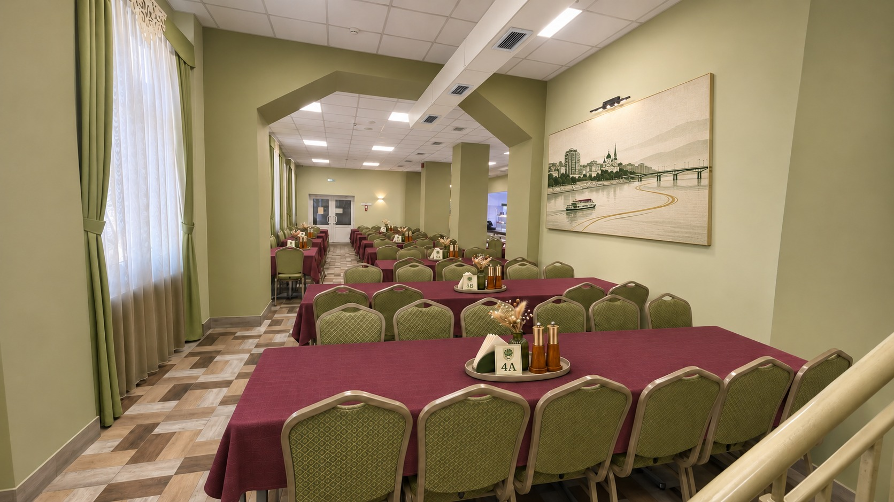
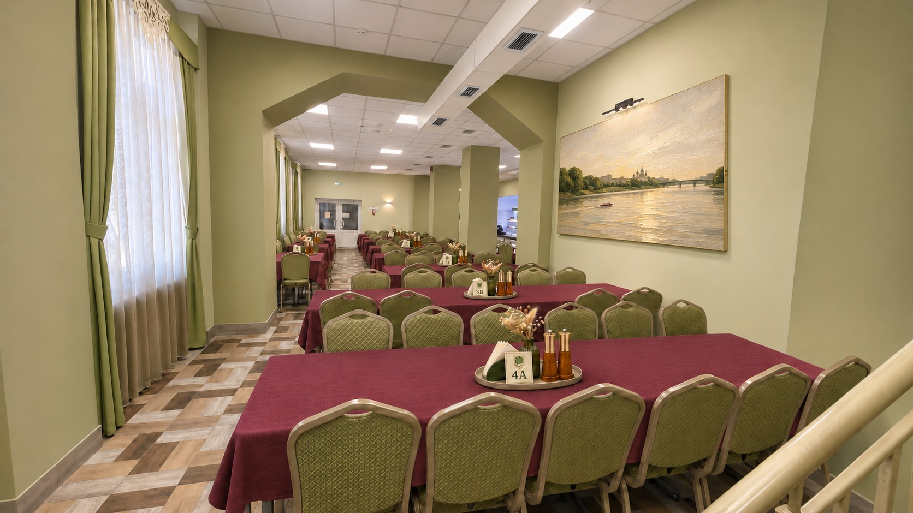
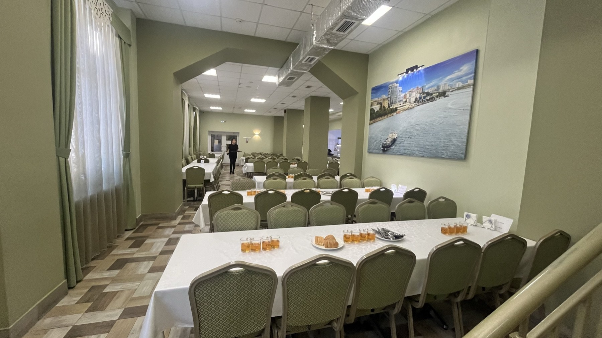

05 / Вентиляционный короб
Гладкий короб.
Панно Дона вместо фотографии.
Светлая металлическая отделка с тонкими стыками. Три существующие решётки открыты. На стене — крупное панно: графика Ростова и моста или тёплый живописный пейзаж.


Реальная основа
Индивидуальные гнутые изделия из оцинкованного металла с окраской RAL или гладкие металлические кассеты на отдельной подсистеме. Размеры и состав узла — по проекту. У металла возможен и тёплый льняной оттенок; в этих кадрах показан светлый вариант.
Изготовление вентиляционных изделийГладкие кассеты АЛБЕС
Перед изготовлением
Вентиляционный подрядчик определяет назначение канала, состав оболочки, зазоры, крепление и доступ к обслуживанию. Покраска по неизвестной фольге не назначена.
Это дизайн и варианты материала. Готового согласования узла и цены монтажа пока нет.
Исходное состояние и условия

Исходное фото. Оболочка и возможная огнезащита не определены. Декоративная отделка не должна менять работу решёток, повреждать канал или закрывать точки обслуживания.